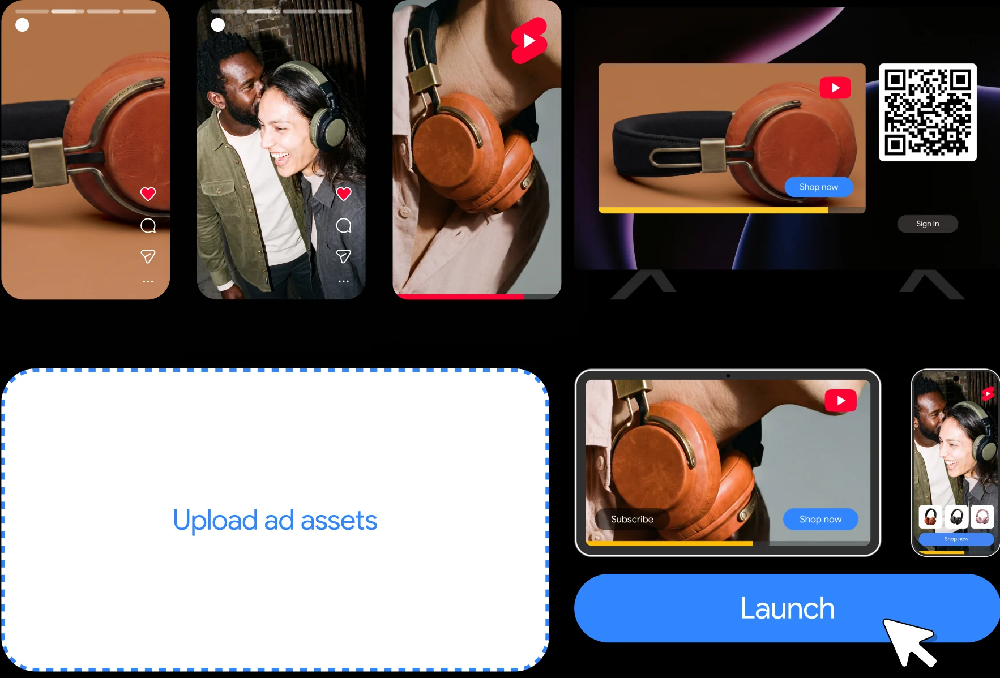

Google Ads
How do you make multi-platform journeys
speak volumes in just 15 seconds?
Graphic + Motion Designer (2026)Design, Motion, Art Direction
At Entropico, I worked with the Google Ads team to create a suite of ads. My goal was to build on Google’s design system to make an asset suite that could scale across every platform. Movement couldn’t just be decoration. Every motion had to show different pieces of content coming together into one clear message.
The asset design suite
Every spot is built from the same set of parts: rounded ad cards, real Google Ads UI states, a single cursor and a Launch button. I pulled these straight from Google’s own products, so viewers recognize the interface the second it appears. Keeping the parts consistent meant we could build versions quickly, and they still felt like one campaign.

Simple shapes and small nods to Google’s UI across platforms let the customer’s own content take center stage. Drag and drop became the hero gesture: everyone knows it, it reads in a second, and it shows how easy it is to turn your social into an ad.
The system had to hold up across every social size without being redesigned each time. I set clear rules for safe areas, type size and where motion starts, so 16x9, 1x1, 4x5 and 9x16 all feel like the same ad.